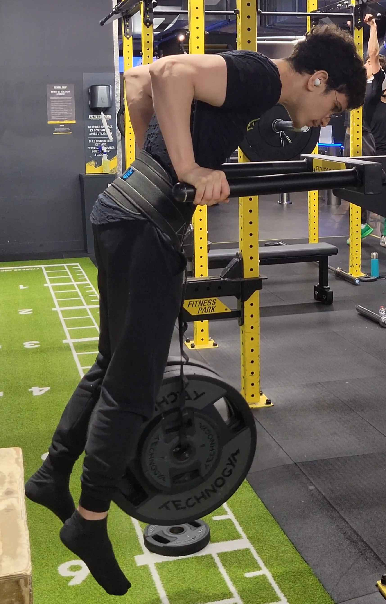
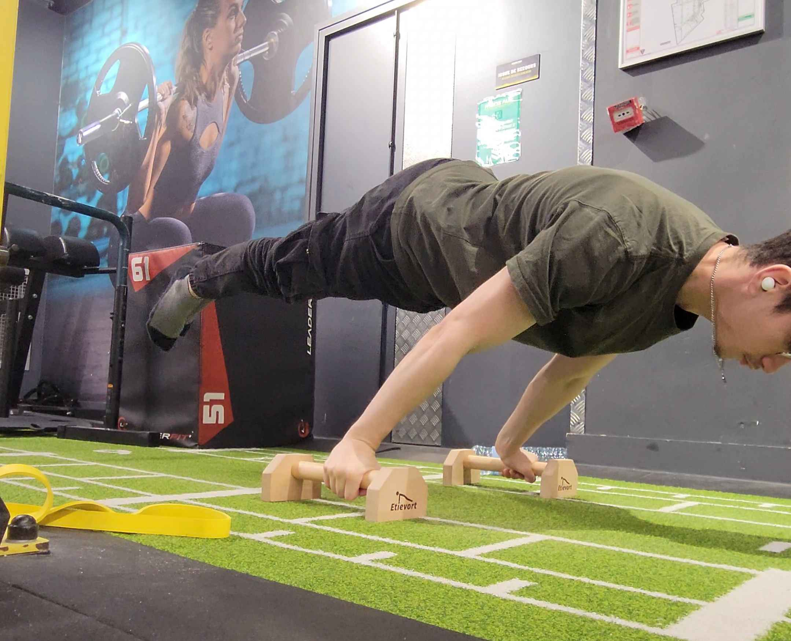

- Qui suis-je ?
Ici vous pourrez me connaître plus personnellement.
Je m'appelle Yassine Messaoui et j'ai actuellement 21 ans, né le 26 avril 2003. Dans cette page vous en apprendrez plus sur moi de manière personnelle.
- Un grand sportif !
Depuis mon plus jeune âge j'ai pratiqué plusieurs sports, en commençant par du foot pendant 4 ans en club de Marcq-en-Barœul où j'ai appris à jouer en équipe. J'étais défenseur donc déjà très observateur pour aider au mieux mon gardien.
J'ai ensuite continué sur du karaté pendant 6 ans qui m'a appris la discipline et le dépassement de soi. J'ai aussi appris la persévérance et à garder confiance en soi-même, lors de compétition, j'ai certes appris à faire face à un adversaire mais le plus dur était honnêtement de faire face à soi-même. C'est certainement à partir d'ici que j'ai acquis la capacité à me lancer des défis malgré les divers échecs et qu'il ne fallait jamais abandonner avant d'avoir atteint ses objectifs. Cette mentalité a été mise à l'épreuve notamment durant mes 3 années de CPGE.
À cause du covid, on n'a pas eu d'autre choix que d'arrêter le sport en club, c'est ainsi que j'ai commencé la musculation pendant 6 mois, mais étant agile et ayant l'habitude d'utiliser mon corps, je me suis converti à la callisthénie.
- La callisthénie
Je dois admettre que pour cette partie, c'est la passion qui va parler à ma place !
Peut-être ne connaissez-vous pas la callisthénie, je vais donc présenter ce sport : il s'agit de la musculation au poids du corps, notamment avec les tractions, dips, pompes, squats et toutes leurs variantes ! Il y a principalement trois grandes branches que l'on nomme Dynamics (consiste à se balancer sur une barre de traction en faisant des figures telles que des saltos mais en se rattrapant sur la barre), Street lifting (consiste à se lester le plus lourd possible sur les tractions et dips, on a aussi le Set'n'Rep qui est connu) et Static (consiste à maintenir une forme le plus longtemps possible).


Ce sport fait partie de ma vie au quotidien et m'a énormément appris sur le dépassement de soi, la patience, car les figures statiques demandent souvent plusieurs années pour être maîtriser. Contrairement à la musculation où les mouvements sont plutôt guidés, il est fréquent en callisthénie de se blesser. D'une certaine manière, grâce à ce sport, j'ai aussi appris à accepter le fais que pour atteindre son objectif, il faudra passer par des moments de douleurs.
Sans aucun doute, la callisthénie m'a fait grandir en tant que sportif mais aussi en tant qu'humain.
- Un "Geek"
Depuis petit j'ai toujours été fan de jeu vidéo. J'étais extrêmement curieux de comment ils les développaient. J'ai ainsi touché au fichiers afin de créer divers mod dans divers jeux tels que Dying light 1 et 2 et aussi Monster Hunter World.
Bien évidemment, j'ai aussi joué aux échecs, j'apprécie beaucoup l'aspect stratégique et anticipation. D'ailleurs, ce que j'aime le plus dans les jeux de stratégies, c'est avoir 2 coups d'avances plutôt que gagner.